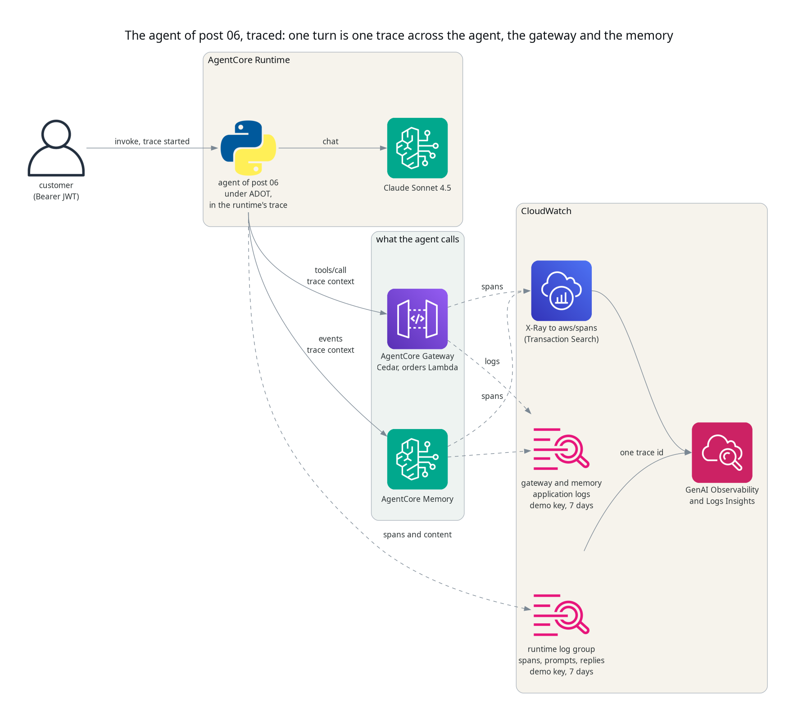
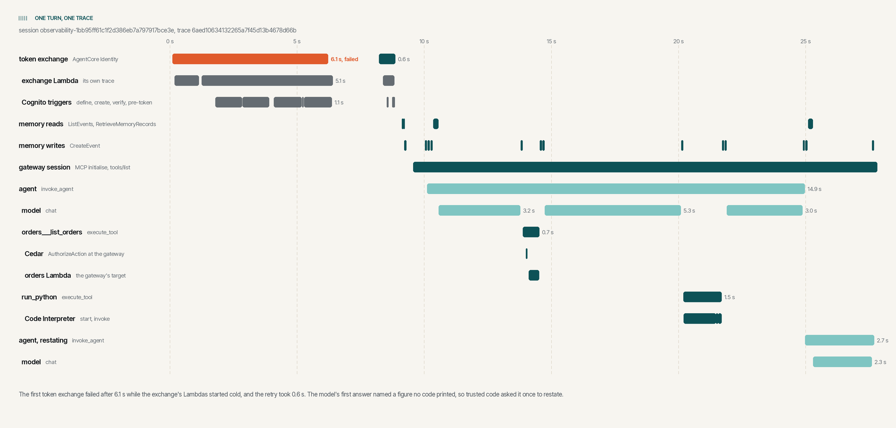

Tracing an AgentCore agent, one turn at a time
TL;DR;
The order support agent from post 06 now sends OpenTelemetry traces to CloudWatch. One customer's turn becomes one trace, across the model calls, the gateway's Cedar check, the orders Lambda, the sandbox and the memory, and every span the agent starts carries the conversation's session id. The change is a package, a start command, about twenty lines of Python and log deliveries for the gateway and the memory. On the first live run the trace showed two things the response never could, a token exchange that failed and was retried, and a figure the model stated without computing it.
SOURCE CODE - All code for this post is available at: https://github.com/levantar-ai/demos/tree/main/agentcore/07-observability
Longer version
This series is building one thing, the order support agent for Brightwell, a small online retailer of outdoor kit. Post 06 handed a Bedrock model the gateway, the Code Interpreter sandbox and AgentCore Memory, and let it decide what to call. Each response tells the caller which tools the model chose in that one turn.
An operator needs every turn, for every customer, with how long each step took, what the model was sent and what it said back. That is what AgentCore Observability gives you. The runtime starts a trace for every request, the agent's spans and the gateway's and the memory's join it, and CloudWatch shows the turn as one trace. Nothing the agent does changes in this post.

1 - Sending the spans
The runtime injects the OpenTelemetry settings into the container. What reads them is the AWS Distro for OpenTelemetry (ADOT), so the image installs it and starts the agent under it:
RUN pip install --no-cache-dir boto3==1.43.108 strands-agents==1.57.2 bedrock-agentcore==1.24.0 aws-opentelemetry-distro==0.22.0
CMD ["opentelemetry-instrument", "python", "main.py"]
From then on Strands Agents emits a span for the agent, each event loop cycle, each model call and each tool, and the botocore and MCP instrumentation emit one for every AWS call and MCP request. The runtime role gains the log and X-Ray permissions the AgentCore runtime permissions page lists for observability.
NOTE: spans only reach CloudWatch once CloudWatch Transaction Search is enabled. It is a setting for the whole account and Region, so it is not in this demo's Terraform. The README has the three commands that turn it on.
2 - Keeping the turn in the runtime's trace
The runtime passes its trace context to the container in the request
headers. ADOT reads those headers for the web frameworks it instruments,
but this agent's server is the standard library's http.server, so
nothing reads them and the turn's spans would form a trace of their own,
cut off from the runtime's. The handler reads them itself:
@contextmanager
def traced(headers, session):
ctx = propagate.extract(headers)
if baggage.get_baggage("session.id", ctx) != session:
ctx = baggage.set_baggage("session.id", session, ctx)
token = context.attach(ctx)
try:
yield
finally:
context.detach(token)
with traced(self.headers, session), one_turn(subject, session):
gateway_token = self.exchange(bearer_from(self.headers))
turn = self.respond(prompt, customer, session, gateway_token, subject)
Every span the turn starts becomes a child of the runtime's, and a span
processor ADOT adds copies session.id from the baggage onto each one.
Plain OpenTelemetry leaves baggage off the spans. That attribute is what
groups a conversation's turns in CloudWatch and what you query them by.
The botocore and MCP spans carry the trace context on to the gateway and
the memory, so their spans join the same trace. The memory's carry the
session id as well. The gateway's join by the trace id alone.
3 - The gateway and the memory
The gateway and the memory leave their telemetry's destination to you. Each gets two CloudWatch Logs deliveries, its application logs to a log group and its spans to X-Ray:
resource "aws_cloudwatch_log_delivery_source" "traces" {
for_each = local.observed # the gateway and the memory
name = "${local.name_prefix}-${each.key}-traces"
log_type = "TRACES"
resource_arn = each.value
}
resource "aws_cloudwatch_log_delivery_destination" "traces" {
name = "${local.name_prefix}-traces"
delivery_destination_type = "XRAY"
}
resource "aws_cloudwatch_log_delivery" "traces" {
for_each = local.observed
delivery_source_name = aws_cloudwatch_log_delivery_source.traces[each.key].name
delivery_destination_arn = aws_cloudwatch_log_delivery_destination.traces.arn
}
The application log deliveries have the same shape, with a log group as the destination.
4 - One turn, one trace
The customer asked the post 06 question, how much they had spent this year by month and which month was the biggest. The answer was right. This is the trace of that turn, drawn from the spans CloudWatch stored.

- The agent exchanged the customer's token for a gateway token through AgentCore Identity. The first attempt failed after 6.1 s and the retry took 0.6 s.
- It read the conversation and the customer's preferences from memory.
- The model asked for
orders___list_orders. Cedar allowed it, and the span records the decision and the policy that made it,demos_agentcore_07_own_orders_only. The orders Lambda answered. - The model wrote pandas and asked for
run_python, which the sandbox ran. - The model answered, and the agent made one more model call to restate it.
The exchange's own Lambdas are not in this trace. AgentCore Identity calls them without passing on the trace context, so their spans are in traces of their own, found by time rather than by id.
5 - Finding a turn by its session
With session.id on every span the agent starts, a conversation can be
pulled out of the runtime's log group with Logs Insights. This counts each
turn's model calls and tokens:
filter @logStream = "spans" and name = "chat"
and `attributes.session.id` = "observability-1bb95ff61c1f2d386eb7a797917bce3e"
| stats min(startTimeUnixNano) as started, count(*) as model_calls,
sum(`attributes.gen_ai.usage.input_tokens`) as input_tokens,
sum(`attributes.gen_ai.usage.output_tokens`) as output_tokens
by traceId
| sort started
traceId model_calls input_tokens output_tokens
6aed10634132265a7f45d13b4678d66b 4 8960 644
6aed108000cd74fb1039183c788fa4db 2 5966 284
And this finds every failed span, in any session:
filter @logStream = "spans" and status.code = "ERROR"
| fields @timestamp, name, round(durationNano / 1000000) as ms, status.message
| sort @timestamp
2026-11-05 23:25:30.206 Bedrock AgentCore.GetResourceOauth2Token 6123
ValidationException: ... GetResourceOauth2Token operation: HTTP request failed against Token endpoint
The CloudWatch console shows the same data under GenAI Observability, as a session list, a timeline per trace and each span's attributes.
6 - What the trace showed
Both turns returned a correct answer. The trace shows two things the response did not.
The first is the failed token exchange. Identity gave up on the exchange
post 05 built after 6.1 s, with HTTP request failed against Token
endpoint, and the agent's retry took 0.6 s. The exchange's own spans,
found beside the trace by time, show its Lambda and Cognito triggers
starting cold. It happened again after the stack sat idle for 25 minutes,
so cold starts are the likely cause. The customer saw no error, only six
extra seconds, and the traces show where they went.
The second is the extra model call. The first answer ended "across 7 orders", but the model's code never printed a count, so post 06's figure check asked for a restatement, which dropped it. The 7 was right. It just had no tool result behind it, and the restatement cost one model call and 2,740 input tokens.
7 - The trace is customer data
ADOT writes the model's input and output as log records beside the spans, from the Strands instrumentation rather than from AgentCore on its own. That is what makes the trace useful, and it means the logs hold the system prompt, the customer's question, their orders and every answer. Treat them as you would the order data.
The demo's log groups are encrypted with its KMS key and kept for seven
days, and the runtime's role can write its logs but not read, delete or
change them. The gateway's, the memory's and the Lambda's spans go to the
account's aws/spans log group instead, which holds attributes such as
the tool and the Cedar decision rather than the conversation.
The NCSC's guidance on managing the cyber risk of agentic AI makes the same point. It wants agent transcripts and traces collected, warns that they "may contain sensitive data", and asks for them to be protected from change or deletion. Here that means personal data, so before real customers use it, decide who may read these logs, consider an immutable archive, and use Strands' redaction where a trace without the conversation is enough.
Conclusion
Tracing an AgentCore agent takes very little. The container starts under ADOT, the handler joins the trace the runtime started, and the gateway and the memory are given somewhere to send their spans. After that, one customer's turn is one trace, and the agent's spans carry the session id.
It is worth having before anything goes wrong. On its first run it showed a failure a retry was hiding, and the model counting in its head where the agent's rules say it must compute. Neither was visible in a response that was right.
A trace shows what the agent did, not whether it should have. Testing that is the next post, evaluations as a quality gate.
References:
- https://github.com/levantar-ai/demos/tree/main/agentcore/07-observability
- https://docs.aws.amazon.com/bedrock-agentcore/latest/devguide/observability.html
- https://docs.aws.amazon.com/bedrock-agentcore/latest/devguide/observability-configure.html
- https://docs.aws.amazon.com/bedrock-agentcore/latest/devguide/runtime-permissions.html
- https://docs.aws.amazon.com/AmazonCloudWatch/latest/monitoring/Enable-TransactionSearch.html
- https://aws-otel.github.io/docs/getting-started/python-sdk
- https://strandsagents.com/latest/documentation/docs/user-guide/observability-evaluation/traces/
- https://github.com/awslabs/amazon-bedrock-agentcore-samples
- https://www.ncsc.gov.uk/blogs/managing-the-cyber-risk-of-agentic-ai